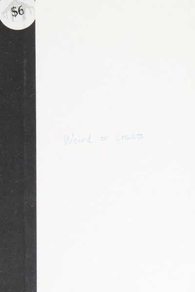

Library › Creativity
Wired to Create — Summary & Key Lessons

Unraveling the mysteries of the creative mind — the science of what makes creators tick, from a leading psychologist.
📖 OPEN THE FULL INTERACTIVE BREAKDOWN →🌐 Read it in Hindi, Hinglish, Gujarati, Tamil & 22 more languages — free, with audio.
💡 The Big Idea
Drawing on 100+ studies of creators and interviews with icons from Maya Angelou to David Lynch, psychologists Kaufman and Gregoire reveal the creative mind's ten defining habits: imaginative play, passion, daydreaming, solitude, intuition, openness to experience, mindfulness, sensitivity, turning adversity into advantage, and thinking differently. Their thesis is liberating: creativity is not a personality type you're born with — it's a way of engaging with the world that anyone can cultivate.
🧠 The 5 Key Lessons
Lesson 1: The Ten Habits of the Creative Mind
The Creative Mind
Kaufman and Gregoire distilled decades of research into ten habits shared by highly creative people: imaginative play, passion, daydreaming, solitude, intuition, openness to experience, mindfulness, sensitivity, turning adversity into advantage, and thinking differently. None are genetic gifts — they're practices. Cultivate the habits and you cultivate the creativity.
📖 Example: The researchers found that across domains — art, science, business — creators share these habits more than they share personality traits. Einstein played violin, Darwin wandered for hours, Maya Angelou wrote in anonymous hotel rooms: all ten habits in action. Read the full example →
⚡ Do this: Score yourself 1–10 on each of the ten habits. Pick your lowest two and design one small practice for each this week.
Lesson 2: Daydreaming Is a Feature, Not a Bug
Imaginative Play & Daydreaming
Science has flipped on daydreaming: the default mode network — the brain's idle state — is where creative connections are forged. People who let their minds wander regularly score higher on creativity tests, and 'constructive internal reflection' predicts creative achievement. The authors' advice: schedule daydreaming like you schedule work.
📖 Example: The book cites studies showing that mind-wandering boosts creative problem-solving — plus the creator testimonies: J.K. Rowling's idea for Harry Potter arrived on a delayed train, staring out a window; the Beatles' 'Something' came to George Harrison in a… Read the full example →
⚡ Do this: Book 15 minutes of 'constructive daydreaming' daily — walk without headphones, stare out a window, shower long. Keep a notepad nearby.
Lesson 3: Passion: The Slow Burn
Passion
Forget the lightning-bolt myth of sudden passion. Research shows creative passion is usually a slow burn: curiosity about a topic → growing interest → deep engagement → intrinsic motivation that fuels years of work. And the deeper the intrinsic motivation, the more creative the output — external rewards actually dampen creativity.
📖 Example: The authors point to creators like Steve Jobs, whose calligraphy class — taken for curiosity alone — later shaped Mac typography. The slow-burn passions that seem 'useless' are the ones that compound into signature work. Read the full example →
⚡ Do this: Identify one topic you keep returning to 'for no reason.' Give it one hour of focused attention this week — follow it wherever it goes.
Lesson 4: Openness: The Master Trait
Openness to Experience
Across all the research, one trait towers over the rest: openness to experience — the appetite for novelty, ideas, aesthetics, and new ways of being. It predicts creative achievement across domains more reliably than IQ. The good news: openness is partly trainable — you can practice saying 'yes' to the unfamiliar.
📖 Example: The book's data: people high in openness pursue diverse experiences, which builds a richer store of raw material for combinations — the engine of creativity. Travel, new cuisines, strange art, conversations with strangers: all fuel it. Read the full example →
⚡ Do this: Do one genuinely new thing this week — a cuisine, a route, a skill, a stranger-conversation. Log what it added to your mental library.
Lesson 5: Adversity Into Advantage
Adversity
The researchers found a striking pattern: many eminent creators transformed early adversity — illness, loss, discrimination — into creative fuel. Post-traumatic growth is real: suffering can deepen empathy, perspective and motivation. The creative mind doesn't deny pain; it metabolizes it into meaning.
📖 Example: Frida Kahlo turned chronic pain into an artistic signature; Beethoven's deafness redirected his work inward; the authors also cite everyday creators who channeled grief into art, music and ventures that helped others with the same pain. Read the full example →
⚡ Do this: Write one page about a difficulty you've survived and what it taught you that 'normal' people don't know. That insight is material — use it in your work.
✅ 5-Step Action Plan
- Score the ten habits; build one practice for your two lowest.
- Schedule 15 minutes of constructive daydreaming daily.
- Follow one slow-burn curiosity for an hour this week.
- Do one new thing — openness is trainable.
- Write one page turning your hardest experience into material.
⚠️ When This Doesn't Work
Kaufman's celebration of the creative mind's 'messiness' is beautiful — and Syd Barrett is the warning the book underweights: the most wired-to-create musician of his generation, whose divergent thinking invented Pink Floyd's sound, and whose intensity — the same trait the book romanticises — burned him out of music at 21 and into obscurity for the rest of his life. Creativity and mental vulnerability travel together, and the culture that celebrates the 'tortured artist' is quietly celebrating the destruction. The book should come with a prescription: protect the mind that makes the work, or the work stops.
💀 The Graveyard Proves It
🎸 Syd Barrett — The Creative Genius Who Burned Out Before His Band Made History. Burn: His mind, his career, and his place in the band he founded. Read the full case study →
💬 Best Quotes from Wired to Create
- “The creative mind is a paradox: it is both open and focused, both childlike and wise.”
- “Daydreaming is not a waste of time — it's an essential feature of the creative mind.”
- “Passion isn't a sudden lightning bolt — it's a slow burn of curiosity.”
Interactive version: mark lessons as read, listen in your language, share quote cards.